User Guide
This page explains every screen and feature in Riesz Manager. It assumes you already have Riesz Manager deployed and can sign in; if not, start with the Quickstart. Each section stands on its own, so feel free to jump to the parts you need.
The interface is currently available in Chinese only. This guide gives each label in English with the original Chinese in parentheses, so you can find it on screen.
Interface overview
When you open a session after signing in, the window is split into three columns—left, middle, and right—with the composer at the bottom of the middle column.
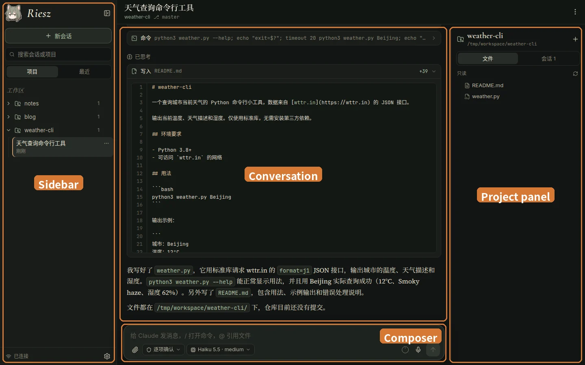
| Area | What it does |
|---|---|
| Sidebar | At the top are the Riesz Manager logo (click it to return to the home screen) and the “New session” (新会话) button; below are the “Search sessions or projects” (搜索会话或项目) search box and two tabs, “Projects” (项目) and “Recent” (最近). The bottom-left corner shows the connection status (“Connected” (已连接)) and the settings button (gear icon). Click the button next to the logo to collapse the sidebar into a narrow strip that keeps the home, expand, new session, and settings buttons. |
| Conversation | The header shows the session title, project, and git branch; “⋯” on the top right opens the session menu (see Managing sessions). The conversation itself is in the middle. |
| Composer | Where you send messages, run slash commands, mention files, and switch permission modes and models. See Composer. |
| Project panel | Has two tabs: “Files” (文件) and “Sessions” (会话). “Files” (文件) is a read-only file tree of the current project with git status badges (see Project files); “Sessions” (会话) lists every session in this project. On narrower screens the right panel collapses automatically; click the button on the right side of the header to open it. |
On the home page (click the Riesz Manager logo at the top left to get back to it), Lisi greets you for the time of day and says what is going on: how many sessions are running, or that a session is waiting for your approval. When one is waiting, a “Go see …” (去看看「…」) button follows, which takes you straight to it.
The two tabs in the sidebar let you browse sessions in different ways. A green dot next to a session means it is currently running:
- “Projects” (项目): Each top-level folder inside your workspace (the directory configured at deployment, such as
~/workspace) is a project. Click a project to expand its sessions; click the project name to open the project page, or click a session to open that session. - “Recent” (最近): All sessions ordered by time (Today, Yesterday, Earlier, and so on). Currently running sessions are grouped at the very top under “Running” (运行中), separated by a divider.
There are two ways to start a new session: click “New session” (新会话) in the sidebar, pick a project under “Select a project” (选择项目), and send your first message on the project page; or click a project name in the sidebar to open its project page and send a message from the composer below. The session is only created when you send the first message. New sessions inherit the default model and reasoning effort you configured in Claude Code.
Conversation
The conversation area renders the full Claude Code transcript, including Markdown, syntax-highlighted code, math formulas, collapsible thinking blocks, context compaction notices, and images. Scrolling up automatically loads older messages; when you scroll away from the bottom, a button appears in the bottom-right corner to jump back down.
Claude's tool calls are shown as cards: commands and their output, file diffs, newly written files, to-do lists, subagents, web fetches, MCP tools, and more. Click a card's header to expand or collapse its details.
Click an image in the conversation (an attachment you sent, a screenshot Claude read, and so on) to open it full screen. On a computer, zoom with the mouse wheel, drag to pan, double-click to switch between zoomed in and actual size, and use the arrow keys or the side buttons to go through the images of the same message. On a phone, pinch to zoom, double-tap to zoom in, swipe sideways for the other images, and swipe down or go back to close. The button at the top right downloads the original.
While Claude is working, a status line with the little mascot appears at the bottom of the conversation (such as “Pondering” (斟酌中) or “Thinking” (思索中)) along with elapsed time. When Claude is waiting on a command or subtask, it shows messages like “Waiting for command to finish” (等待命令执行完成) or “Waiting for subagent to finish” (等待子代理完成); background tasks appear here too. If a session's last run did not finish cleanly, the bottom shows “Terminated · Last run did not complete” (已终止 · 上次运行没有完成).
Composer
From the composer you can send text, run commands, mention project files, attach files, and dictate with voice input. Drafts are saved locally on your device, so switching sessions or refreshing the page will not lose what you typed.
| Action | How to do it |
|---|---|
| Send and new line | On desktop, press Enter to send and Shift+Enter for a new line. On mobile, the return key inserts a new line; tap the send button on the right to send. |
| Queue messages | You can send messages at any time. Messages sent while Claude is busy are queued and delivered as soon as a turn opens up; click “Recall” (撤回) on a queued message to pull it back. |
| Interrupt a task | Press Esc or click the stop button to interrupt the current task. If you have queued messages, interrupting sends them right away (“Interrupt current task and send immediately” (中断当前任务并立即发送)). This only works for sessions running in the web app; sessions running in a terminal must be interrupted from that terminal. |
| Slash commands | Type / to open Claude Code's slash command list (including /compact, /context, /usage, /clear, and any skills or plugin commands you have installed). Use the arrow keys to select, Tab to complete, Enter to confirm, and Esc to close. |
| Mention files | Type @ to bring up the project file list. Selecting a file inserts its path into the composer so Claude will read it. |
| Input history | Press ↑ when the cursor is at the very start of the composer to recall earlier messages you sent, and press ↓ at the very end to move forward again. |
| Attachments | Click the paperclip button to pick files, or paste or drag images and files directly into the composer (dragging shows “Drop to add attachment” (松开以添加附件)). |
| Voice input | Click the microphone button to start recording and click again to stop; the transcribed text is inserted into the composer. If the administrator configured an OpenAI-compatible transcription endpoint, transcription runs on the server; otherwise the browser's built-in speech recognition is used. Microphone access requires HTTPS. |
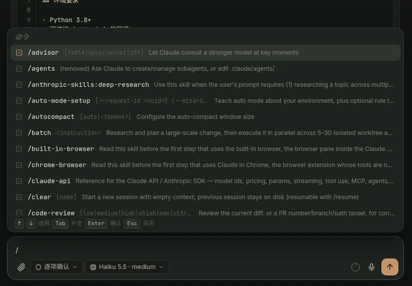
/ to open the slash command list, including built-in commands and installed skills and plugin commands.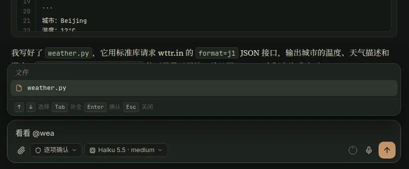
@ to search and mention files in the project.Permission modes and models
Two buttons sit below the composer (or above it on mobile) for switching the permission mode and the model. These settings are saved per session: when a session ends and is later resumed, it keeps the model, reasoning effort, and permission mode it used last time.
Click the left button or press Shift+Tab to cycle through permission modes:
| Mode | Effect |
|---|---|
| “Ask every time” (逐项确认) | Asks for permission before every file edit and command execution. |
| “Auto-accept edits” (自动接受编辑) | Approves file edits automatically, but still asks before running commands. |
| “Plan mode” (计划模式) | Does read-only research first and proposes a plan for your approval. |
| “Auto mode” (自动模式) | Uses a classifier to judge risk and runs safe actions automatically. |
| “Bypass permissions” (跳过权限) | Skips all permission prompts. Dangerous; only appears if enabled by the administrator. |
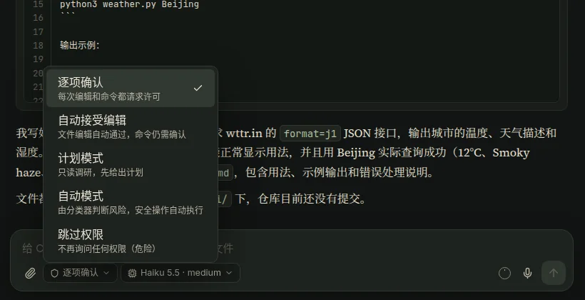
Click the model button on the right to choose any model supported by Claude Code, and pick the reasoning effort on the row below (low, medium, high, xhigh, max; available levels depend on the model).
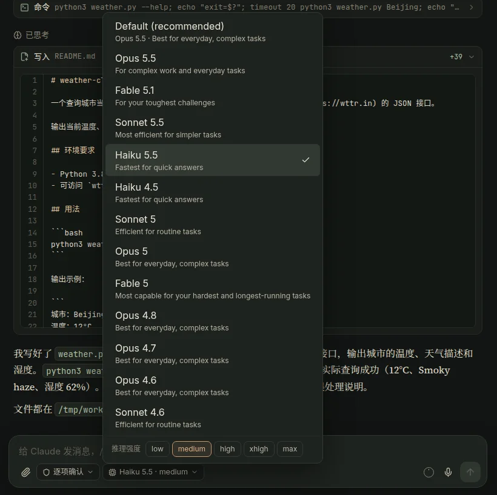
Approvals and questions
When Claude wants to perform an action that needs permission, a confirmation card appears at the bottom of the conversation (for example, “Allow command?” (允许 命令?)) with three buttons:
- “Allow” (允许): Approve this action once.
- “Allow, and don't ask again for …” (允许，且不再询问 …): Approve the action and save the rule to local settings so matching actions are not prompted again.
- “Deny” (拒绝): Reject the action, optionally adding a note to tell Claude why.
In “Plan mode” (计划模式), once Claude finishes drafting a plan, it also asks you to approve the plan here.
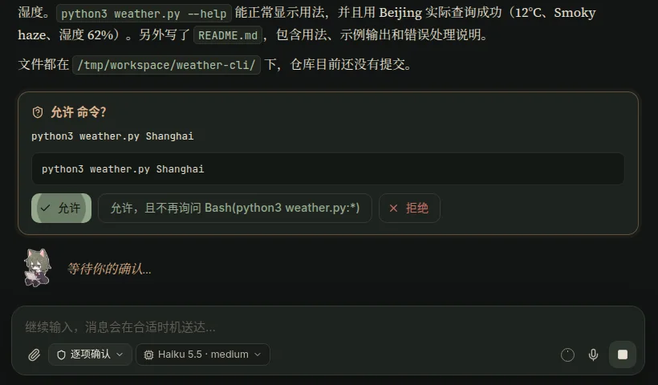
When Claude uses the question tool to ask you something, an option card appears at the bottom. You can click an option directly (or several for multi-select questions), or type your own answer in “Other (type your own)” (其他（自行输入）) and click “Submit answer” (提交回答); click “Skip” (跳过) if you prefer not to answer.
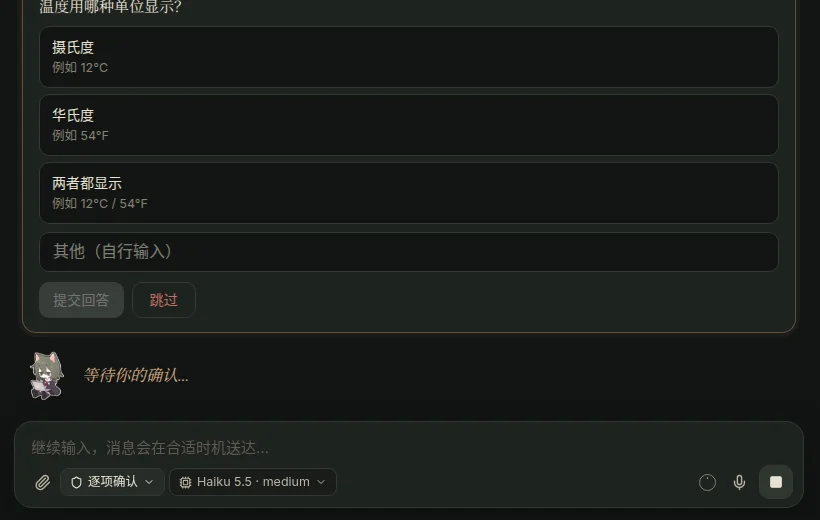
Context usage
The small ring next to the send button shows how much of the context window the current session has used. The ring fills proportionally, turning orange past 70% and red past 90%.
Hover over the ring (or tap it on mobile) to see exact numbers, such as “Context used 3%” (上下文已用 3%), “24k / 967k tokens” (24k / 967k tokens), and “943k until auto-compact” (距离自动压缩还有 943k). The percentage is measured against Claude Code's auto-compaction threshold—that is, the context window size minus the buffer reserved for auto-compaction. Right after a compaction, it shows “Context just compacted” (刚压缩过上下文).
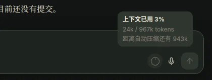
Managing sessions
Click “⋯” on the right side of the conversation header to open the session menu:
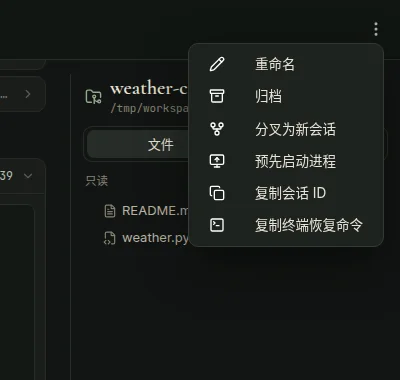
| Menu item | What it does |
|---|---|
| “Rename” (重命名) | Change the session title. You can also click the title directly in the header to rename it. |
| “Archive” (归档) | Tuck the session away. Archiving is just a flag; archived sessions are hidden by default. |
| “Fork as new session” (分叉为新会话) | Duplicate the current session and continue from this point without affecting the original session. |
| “Copy session ID” (复制会话 ID) | Copy the ID of this session. |
| “Copy terminal resume command” (复制终端恢复命令) | Copy the claude --resume <ID> command so you can pick the session back up in a terminal. |
| “Keep running” (保持运行) | When on, the session's claude process is not stopped when idle and is started again after a runner restart, so other sessions can reach it at any time. A check next to the item means it is on; the session list shows a pin next to the title and the header shows “Always on” (常驻). Click again to turn it off; “Stop background process” (结束后台进程) also turns it off. Each kept-running session holds one process in memory, so keep this for the few sessions that need to stay reachable. |
| “Stop background process” (结束后台进程) | Shown only when the session is hosted by the web app. Stops the background claude process; it resumes automatically next time you send a message. |
| “Pre-start process” (预先启动进程) | Shown only when the session is not currently running. Spins up the background process ahead of time. |
| “Take over from terminal” (从终端转到这里) | Shown only when viewing a session running in a terminal. See Terminal sessions. |
In both session lists on the left and right, the “⋯” button next to each session also offers “Rename” (重命名), “Archive” (归档), and “Copy session ID” (复制会话 ID); the “⋯” button next to a project archives the whole project. To view or restore archived items, turn on “Settings → General → Show archived sessions and projects” (设置 → 通用 → 显示已归档的会话和项目); archived items then appear in the list with an “Archived” (已归档) badge, and you can open their menu to choose “Unarchive” (取消归档). Workspace folders that have been deleted on disk are no longer shown.
You can drag projects in the sidebar to reorder them, and drag sessions in the right panel's “Sessions” (会话) tab as well. The order is saved on the server and synced across all your devices.
Sessions running in the web app can message other Claude Code sessions, just like terminal sessions (Claude Code's cross-session messaging): while a session's process is running, other sessions can find it, message it and get replies. A session that is not running cannot receive messages; start it with “Pre-start process” (预先启动进程) or turn on “Keep running” (保持运行) to keep it reachable.
Terminal sessions
Sessions in Riesz Manager are the same Claude Code sessions stored in ~/.claude on your machine. Any claude session you start directly in a terminal on the machine also shows up in the web list (with a green dot while running), and you can click in to watch the conversation live. Conversely, any session you continued in the web app can be picked back up in a terminal with claude --resume <session-id>.
While viewing a terminal session in the web app, you can send it a message directly:
- If the terminal session is idle: The composer notes “Sending will move this terminal session here to continue” (发送后，这个终端会话会转到这里继续). Once you send the message, the
claudeprocess in the terminal exits and the web app takes over the session. You can also hand it over without sending a message by clicking “Take over from terminal” (从终端转到这里) in the session menu. - If the terminal session is busy: The composer notes “The terminal session is busy; your message will be delivered once it's idle” (终端里的会话正在工作，消息会在它空闲后送达). Your message is queued until the task in the terminal finishes and becomes idle, then delivered automatically as the session moves to the web app.
If you do not want to interrupt the terminal session, use “Fork as new session” (分叉为新会话) from the session menu to branch off a copy in the web app.
Starting sessions from other sessions
A session can open new sessions for Riesz Manager to host, for example to hand a separate task to another session. A session started this way is exactly like one you open with “New session” in the web app: Claude in Chrome is connected automatically, it can message other sessions, its approvals show up in the web app (and as push notifications if you enabled them), and it can be kept running. Running claude directly from a session's terminal only gives you a plain terminal session without any of this.
The tool is rieszctl session. A session just runs it from its Bash tool; no token is needed, and none is printed:
# start a session in the current directory with a first message (-C picks another directory)
/path/to/RieszManager/rieszctl session new "Fix the typos in docs/ and tell me which files you changed"
# wait until it has finished this turn and print its last reply (or add --wait to new)
rieszctl session wait 1a2b3c4d
# send it another message; a session stopped for being idle is started again
rieszctl session send 1a2b3c4d "Check the README too" --wait
rieszctl session list --mine # sessions this session started
rieszctl session stop 1a2b3c4d # stop its process when doneA unique prefix of the session ID is enough. new also takes -m for the model, --mode for the permission mode, --effort for the effort level and --keep to keep the session running; pass - as the message to read a long one from standard input. If the new session needs your approval while wait is running, the command prints a note and keeps waiting until you answer in the web app. The session that started it is recorded (“started by” in rieszctl session show). Run rieszctl session --help for the full usage.
Project files
The “Files” (文件) tab in the right panel shows a read-only file tree of the current project, with git status badges on modified and untracked files. Click any file to open the preview modal:
- Code files: Syntax highlighting and line numbers, with a “Word wrap” (自动换行) toggle.
- Markdown: Rendered as a formatted document; click “View source” (查看源码) to see the raw text.
- Images and PDFs: Previewed inline inside the modal.
- HTML files: Rendered as a live web page with scripts and external resources working, and relative links (CSS, images, other pages) resolving against files in the same project. You can click “View source” (查看源码) or “Open in new tab” (在新标签页打开). Previewed pages run inside an isolated sandbox and cannot access Riesz Manager's login state or data.
The top-right corner of the preview modal also has “Copy content” (复制内容) and “Download” (下载) buttons.
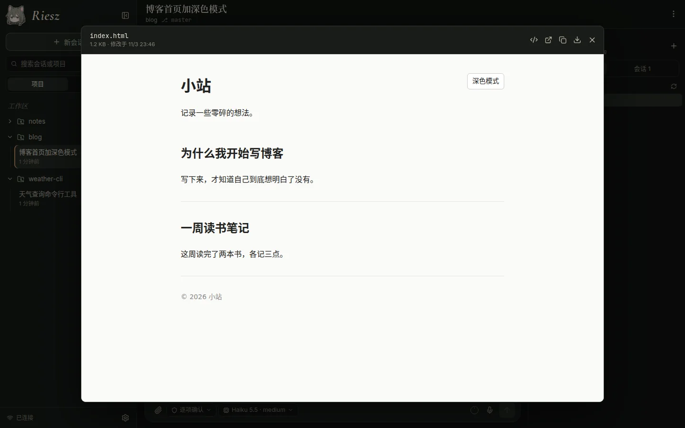
Push notifications
Turn on “Settings → General → Push notifications” (设置 → 通用 → 推送通知) and your browser will ask for notification permission; once enabled, click “Send test notification” (发送测试通知) to verify it works. Push settings are per device, so enable them on each device where you want alerts. Push requires the site to be served over HTTPS; see Deployment Guide: Push notifications for server setup details.
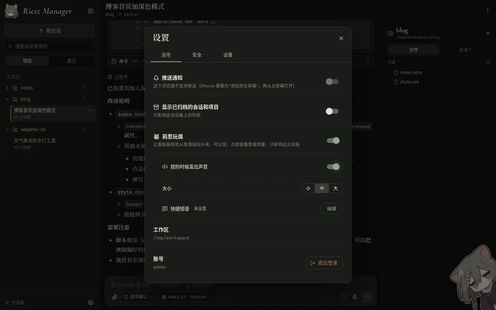
Once enabled, four kinds of events trigger a notification, and tapping the notification opens the corresponding session directly:
| Event | Notification |
|---|---|
| Claude is waiting for your approval | Titled “Waiting for approval · Session name” (等你确认 · 会话名), with body text such as “Run command: npm test” (运行命令：npm test). Multiple approvals in a row in the same session only notify once. |
| Claude has a question for you | Titled “Claude has a question · Session name” (Claude 有问题问你 · 会话名), with the question itself as the body. |
| A long task finishes | When a task that ran for more than 1 minute finishes, sends “Task complete · Session name” (任务完成 · 会话名) with the elapsed time and the start of the final reply. Works for terminal sessions too. |
| Process exits unexpectedly | Sends “Session interrupted · Session name” (会话中断 · 会话名). |
A session you are actively viewing on any device will not send notifications. Payloads are end-to-end encrypted and delivered through your browser vendor's push service, so they arrive even when the browser or app is completely closed:
- Chrome on Android: Uses Google's push service, so the phone must be able to reach Google services. On some Android ROMs you also need to allow Chrome to run in the background and post notifications in the system settings.
- iPhone: Requires iOS 16.4 or later, and you must first add the web page to your Home Screen and open it from the Home Screen before enabling push.
If the settings page says “Notification permission was denied” (通知权限被拒绝了), re-allow notifications in your browser's site settings.
Lisi doll
Lisi (莉思) is the project's mascot. You can enable the desktop doll under “Settings → General → Lisi doll” (设置 → 通用 → 莉思玩偶) (off by default, and stored per device), toggle “Play sound when squished” (捏的时候发出声音), and choose the doll size (small, medium, or large). The squeak is a recording of a real squeaky toy.
The doll was inspired by DeepSeek Balance Whale Widget, a plugin for DeepSeek Harness (DSH): a little whale girl who lives in a corner of the screen, can be squeezed, and keeps an eye on your balance. Lisi's look, artwork and sounds are this project's own; none of the plugin's assets are used.
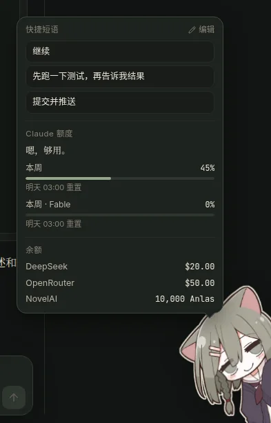
On desktop, Lisi peeks out from the bottom-right corner of the screen, and you can drag her to the bottom-left corner; if the composer reaches into her corner, she steps up above it automatically. On mobile, she normally peeks out just half her head from the edge of the screen and pops out fully with her bubble when tapped; you can drag her up and down along the edge, or drag past the screen's centerline to move her to the other side, and she tucks herself away while you type.
Lisi is more than decoration—she also shows your plan usage and inserts phrases you use often:
- Check plan usage: Tap Lisi to open a bubble showing the percentage used and reset time for each quota window of your Claude subscription (such as “This week” (本周)). The numbers come from Claude Code's own
/usagecommand and checking them does not consume any quota. - Quick phrases: The bubble includes a “Quick phrases” (快捷短语) list; tap any phrase to insert it into the composer (at the cursor, or on a new line after existing text). Click “Edit” (编辑) under “Settings → General → Lisi doll → Quick phrases” (设置 → 通用 → 莉思玩偶 → 快捷短语) to write multi-line phrases and reorder them. Phrases are saved on the server and shared across all your devices.
- Moods and alerts: Her expression changes with what's going on—resting her chin in thought while a session is running, dozing off with floating z's when everything has been idle for a while, and looking worried when your quota is nearly full. When a session is waiting for your approval, an exclamation mark pops up over her head with a reminder, and clicking the session name jumps straight there; she also alerts you the first time your plan usage crosses 80% and 95%.
- Squishing and context menu: Press and hold her to squish her (she flattens and bounces back with a squeak; on desktop she switches to a squished expression, and on mobile she picks a random expression each time you tap her out). Right-click her (or long-press on mobile) to quickly toggle sound, change her size, open “Quick phrases” (快捷短语), “Refresh usage” (刷新用量), or “Hide Lisi” (收起莉思).
Using on mobile
Riesz Manager has a layout tailored for phone screens. On mobile, the home screen shows the 3 most recent sessions with an “All” (全部) button to open the full list; inside a session, the permission mode and model buttons move above the composer and the send button stays pinned on the far right.
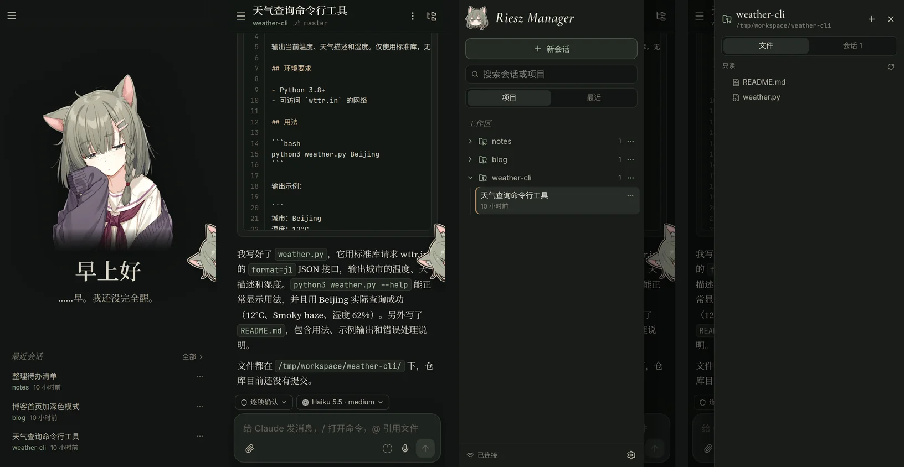
- Swipe gestures: Swipe right anywhere on the screen to open the left session list, or swipe left to open the right project panel; when a drawer is open, swipe back the other way to close it. Swipes that start inside horizontally scrollable areas such as code blocks will not trigger a drawer.
- Back gesture: Pressing the system back button or performing the back gesture closes the topmost overlay first (settings, file preview, menu, drawer, and so on) before navigating back to the previous page.
- Install as an app (PWA): On Android, open “Settings → General” (设置 → 通用) and tap “Install” (安装) (or use “Add to Home screen / Install app” in the browser menu); on iPhone, open Safari's Share menu and choose “Add to Home Screen”.
- Automatic updates: After a new version is deployed on the server, the app refreshes to the new version automatically the next time you bring it back from the background; if you are in the middle of typing, it shows a “New version available” (有新版本) notice first and updates the next time you background the app.
Settings
Click the gear button in the bottom-left corner of the sidebar to open Settings, which has three tabs:
- “General” (通用): Manage “Push notifications” (推送通知), “Show archived sessions and projects” (显示已归档的会话和项目), “Lisi doll” (莉思玩偶), and (when supported by the browser) “Install app” (安装应用). The bottom shows the current workspace path, the signed-in account, and a “Sign out” (退出登录) button.
- “Security” (安全): Manage two-factor authentication. Click “Set up” (开始设置), scan the QR code or enter the secret key manually in an authenticator app (Google Authenticator, 1Password, Aegis, and so on), then enter a 6-digit code and click “Enable” (启用); you will then be shown 8 recovery codes—keep them somewhere safe. Once 2FA is enabled, you can “Regenerate recovery codes” (重新生成恢复码) or “Disable two-factor authentication” (关闭两步验证) here (requires a current code or a recovery code; cannot be disabled if the administrator requires 2FA in the server configuration).
- “Devices” (设备): “Signed-in devices” (已登录的设备) lists all active login sessions (with browser, OS, IP address, and last active time) so you can sign out an individual device or click “Sign out all other devices” (退出其他所有设备); “Recent sign-in attempts” (最近的登录尝试) is shown below.
If you lose your authenticator device, click “Use a recovery code” (使用恢复码) on the sign-in screen and enter one of your recovery codes (each code works only once). If you have lost both your authenticator and your recovery codes, the administrator can run ./rieszctl reset-totp on the server to turn off 2FA, or ./rieszctl revoke-sessions to sign out every device. See Accounts and 2FA for details.
Keyboard shortcuts
| Key | Action |
|---|---|
| Enter | Send message (on desktop); confirm selection in the command or file menu |
| Shift+Enter | Insert a new line in the composer |
| Esc | Interrupt the current task and send queued messages (web-hosted sessions only); close the command or file menu |
| Shift+Tab | Cycle through permission modes |
/ | Open the slash command menu |
@ | Open the file mention menu |
| ↑ / ↓ | Recall input history when the cursor is at the very start (↑) or very end (↓) of the composer; move up and down in the command or file menu (Ctrl+P / Ctrl+N also work) |
| Tab | Complete the highlighted item in the command or file menu |
FAQ
What should I do if the page says “Host runner not connected” (宿主机运行器未连接)?
This means the runner service on the server is not running. Ask the administrator to run ./rieszctl runner status on the server to check its status; see Troubleshooting.
Why did my terminal session suddenly exit?
When you send a message to an idle terminal session from the web app, the session automatically moves over to the web app to continue and the terminal process exits. To go back to working in the terminal, click “Copy terminal resume command” (复制终端恢复命令) in the session menu to get the claude --resume command.
Why did the background process for my web session disappear after sitting idle?
After a web-hosted session has been idle for a while, its background claude process stops automatically to save server resources (how long is set by the deployer's RUNNER_IDLE_TIMEOUT). A session that still has commands running in the background does not count as idle and is not stopped. It resumes on its own the next time you send a message from the composer, with your conversation history and context intact. To keep a session online all the time, for example so other sessions can always message it, turn on “Keep running” (保持运行) in its session menu.
Why is the voice input button disabled?
Browsers only expose the microphone API on HTTPS pages (see Configuring HTTPS). In addition, if the administrator has not configured a server-side transcription endpoint, voice input falls back to the browser's built-in speech recognition, which some browsers do not support.
Why am I not receiving push notifications?
First check that the push toggle under “Settings → General” (设置 → 通用) is turned on and that clicking “Send test notification” (发送测试通知) delivers a test alert. On Android, Chrome needs connectivity to Google services and permission in the phone's system settings to run in the background and show notifications; on iPhone, you must add the site to the Home Screen from Safari and open it from the Home Screen before enabling push.